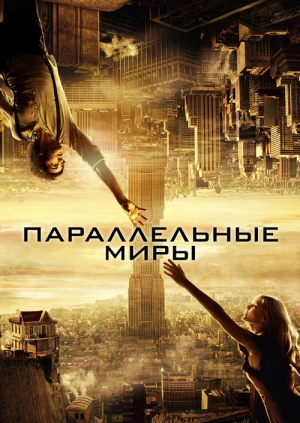
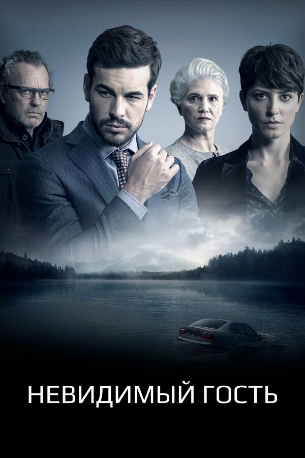
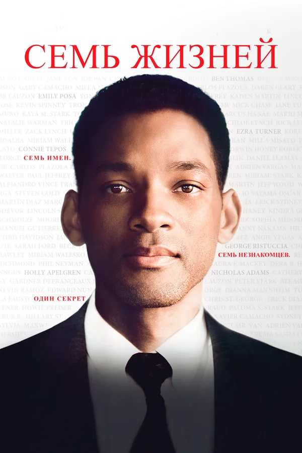
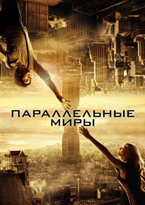
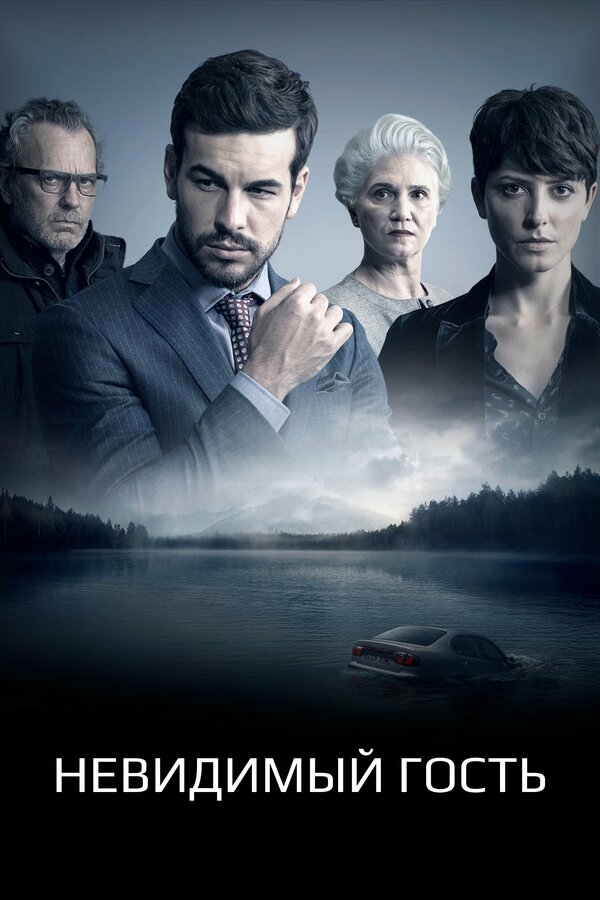
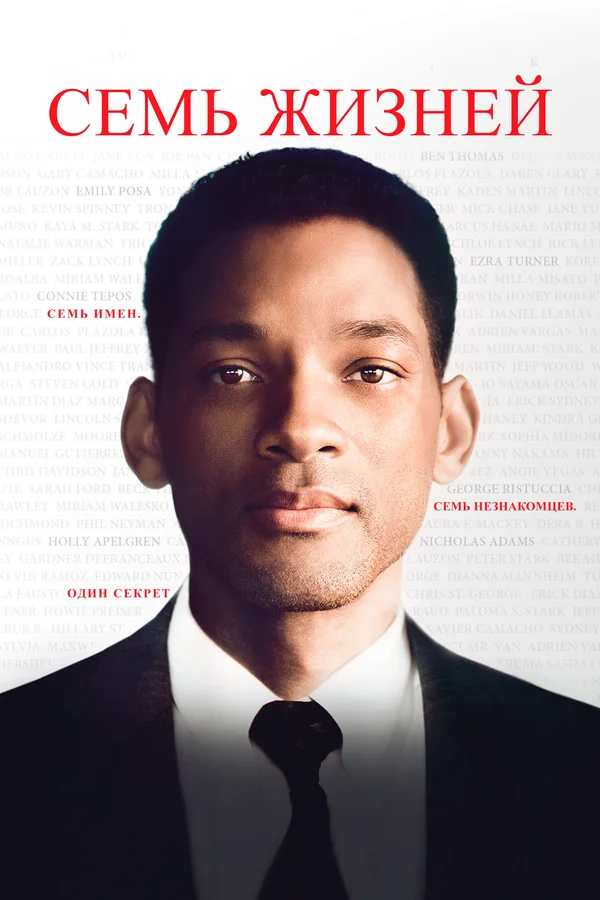

Чернокожий осужденный Джон Коффи (Майкл Кларк Дункан) умеет исцелять людей простым прикосновением рук. Бог даровал ему чувствовать всю боль мира, как физическую, так и душевную. И Коффи способен лечить, забирать и передавать плохую энергию, воскрешать умерших.Приехав как-то на съмочную площадку, Стивен Кинг решил посидеть на электрическом стуле. Его привязали как положено и на голову надели колпак. Даже несмотря на то, что стул был бутафорским, Кинг запаниковал и попросил немедленно его освободить.
Много тысячелетий назад две планеты притянуло друг к другу. На верхней планете люди живут богато, ни в чем себе не отказывая. Там же создана огромная корпорация, опустошающая недра другой планеты, и продающая энергию для жителей нижней планеты по недоступным ценам. Перемещение людей между этими двумя планетами строго контролируется. Однажды между двумя людьми, живущими на разных планетах, зарождается очень сильная любовь, от которой в будущем будет зависеть судьба обоих миров.
По сюжету главного героя обвиняют в убийстве любовницы. Домашний арест, обилие улик, указывающих на его непосредственную причастность, и уже на завтрашний день назначено судебное заседание, где практически не будет шансов как-либо оправдаться перед всеми обвинениями. Мужчина решает прибегнуть к услугам знаменитой Вирджинии Гудман - женщины, известной своим умением докапываться до правды даже в самых невероятно запутанных делах и историях. Она мастер по выходу из невероятных ситуаций и способна за один вечер составить идеальную беспроигрышную стратегию защиты, ведь этот случай станет последним в её карьере, а завершить её хочется на ударной и высокой ноте.
Инженер Тим отправляется в необычное путешествие в искупление фатального поступка своей жизни. В ходе своей поездки он встречает семерых незнакомцев, включая смертельно больную Эмили, которая называет себя девушкой с подбитыми крыльями. Тим неожиданно влюбляется в нее, что сильно усложняет его первоначальный план. Сможет ли он разгадать послание судьбы?
 




